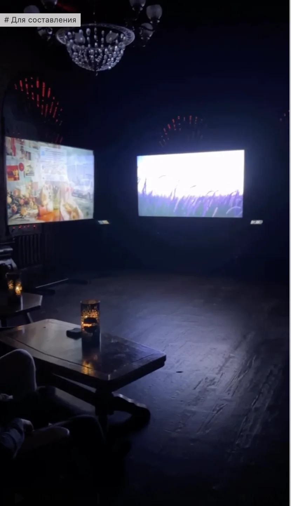
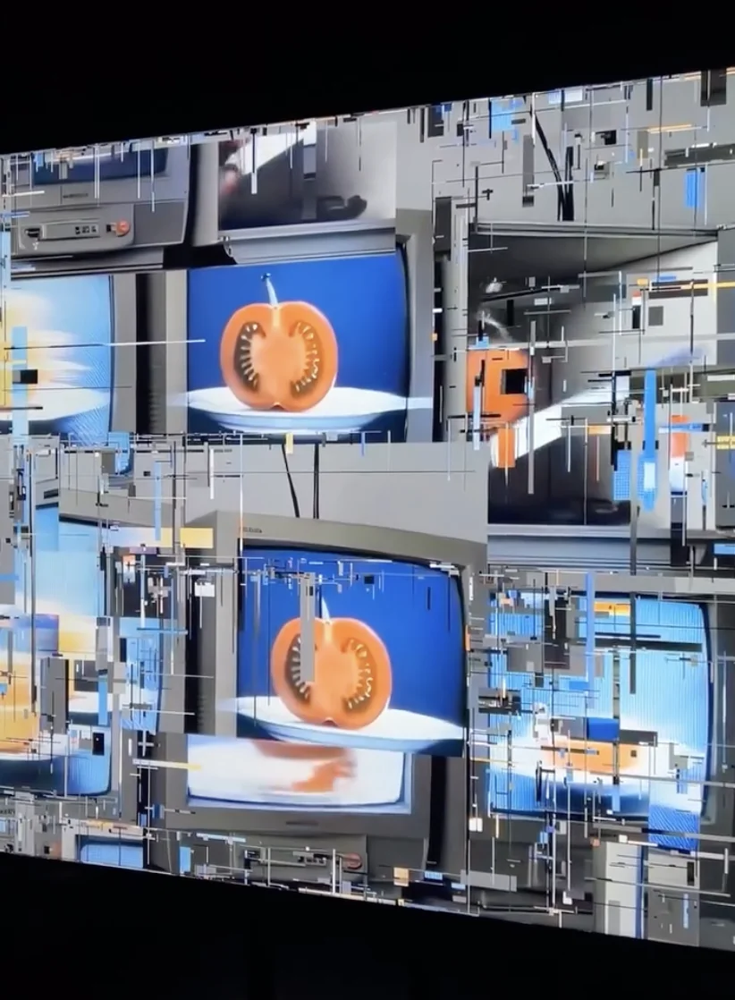
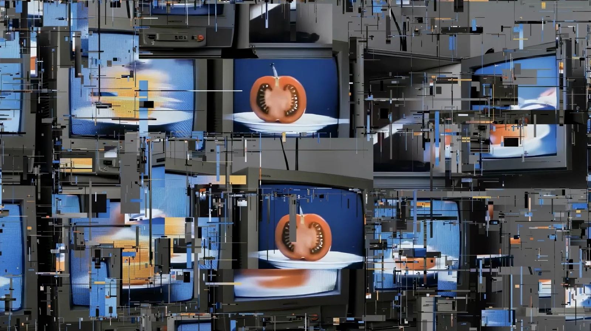

《过量》·《净化》 · «Избыточность» · «Катарсис»
莫斯科 · Gazgolder · 2025年7月12日
视频作品《净化》（Catharsis）作者。
《净化》在Melodica于Gazgolder组织的数字艺术展《过量》中展出。展览探讨无尽内容时代中表现力与视觉饱和之间的边界。
在这件作品中，我将信息噪声视为一种割裂感知的环境。这里的净化并不是外在奇观，而是从持续的媒体消费中退一步，重新获得安静、听见自己。
作品制作
图像使用Flux与我训练的LoRA生成，动画使用Wan2.1制作。Python脚本将动画切分为一百万个片段，再以随机顺序组接。剪辑在DaVinci Resolve中完成，最后使用Topaz Video提升分辨率。
照片与图像


